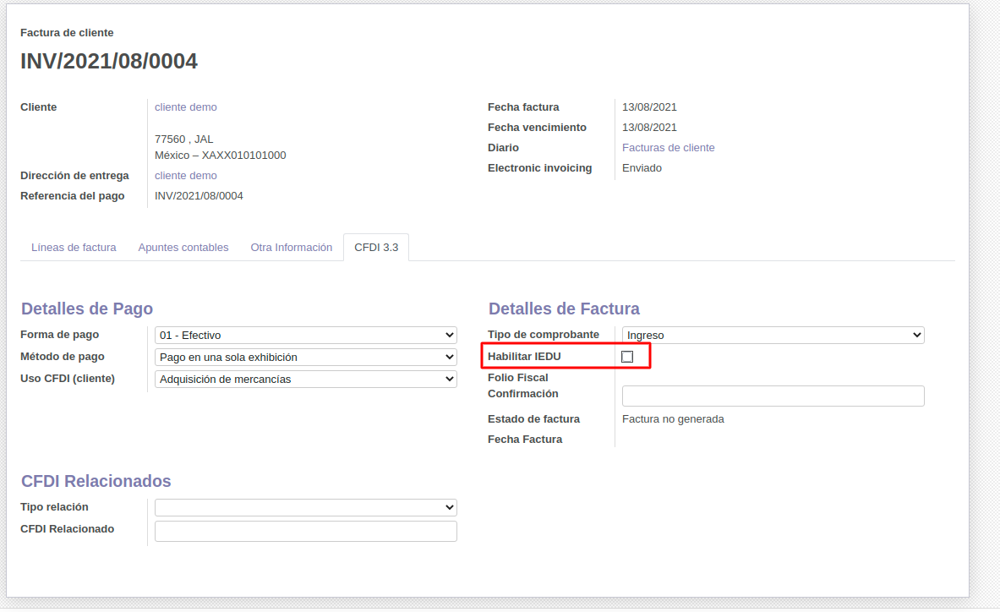
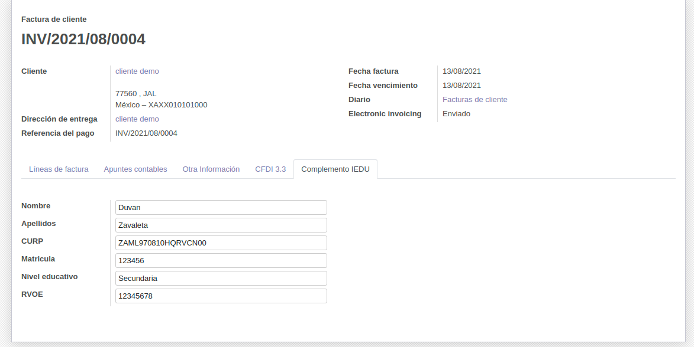
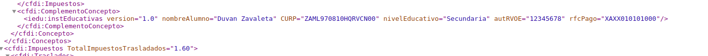
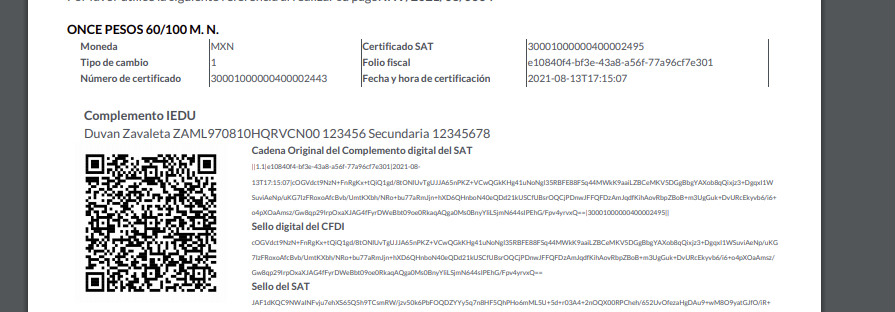

Complemento IEDU CDFI
Se agrega el campo para activar el complemento IEDU

Al activar el campo del complemento IEDU aparece un nuevo menú para ingresar los datos del complemento

Vista del XML

Vista del PDF
